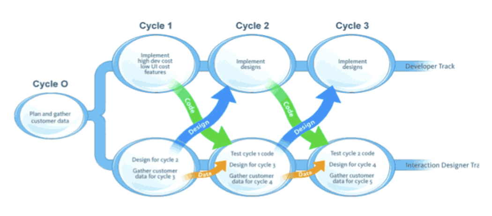
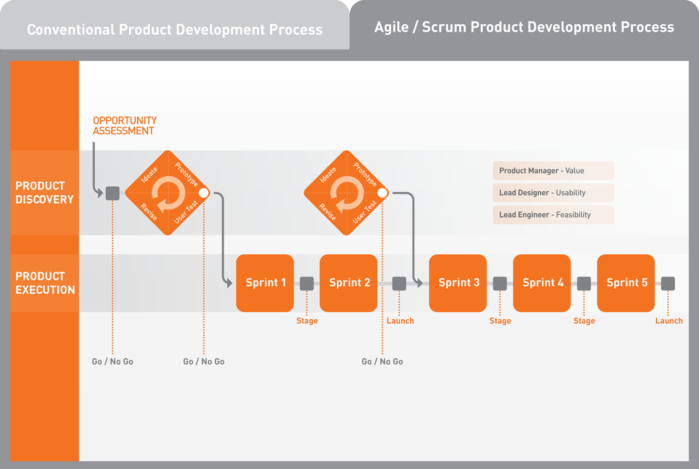
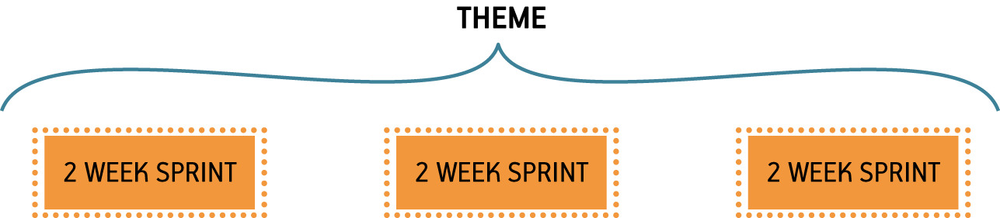
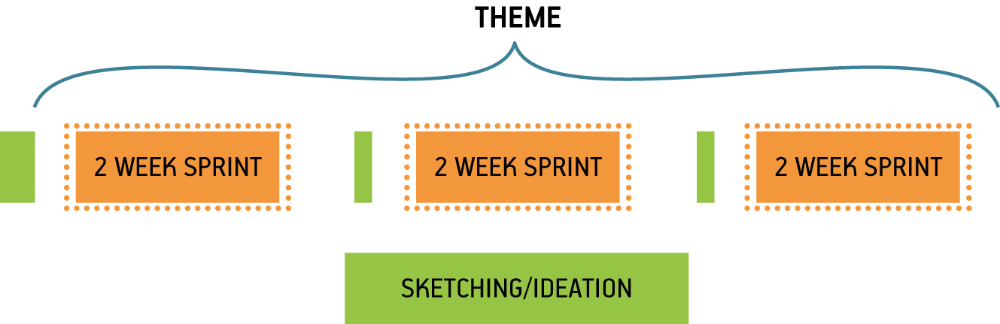
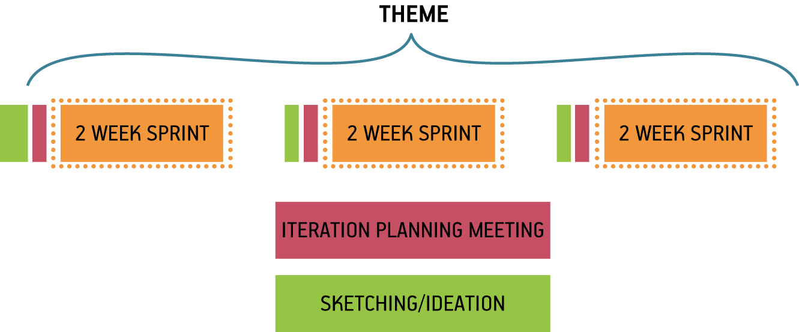
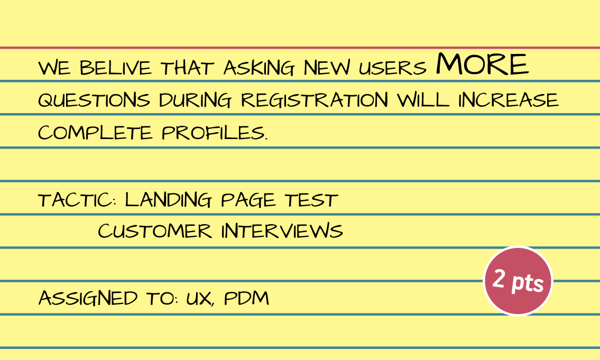
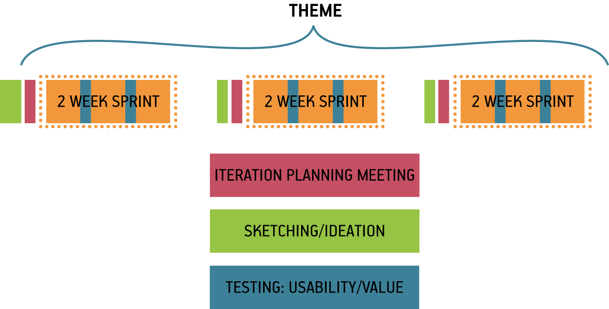
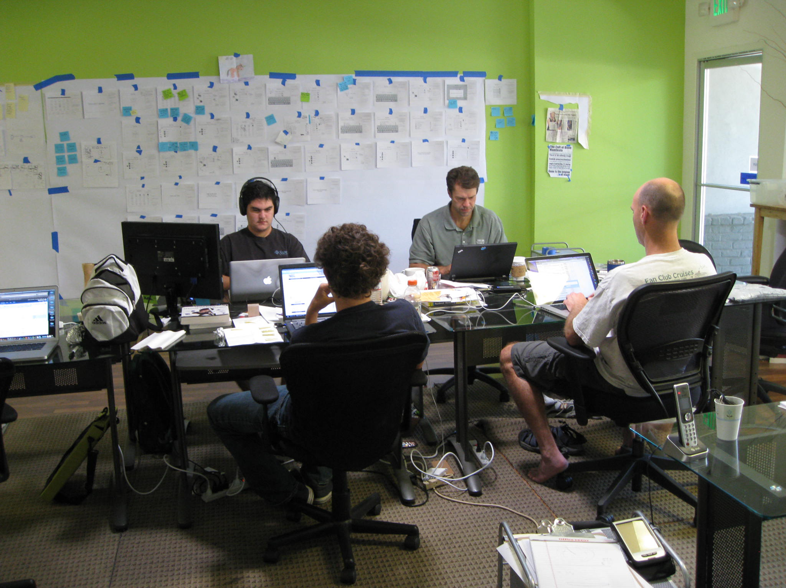
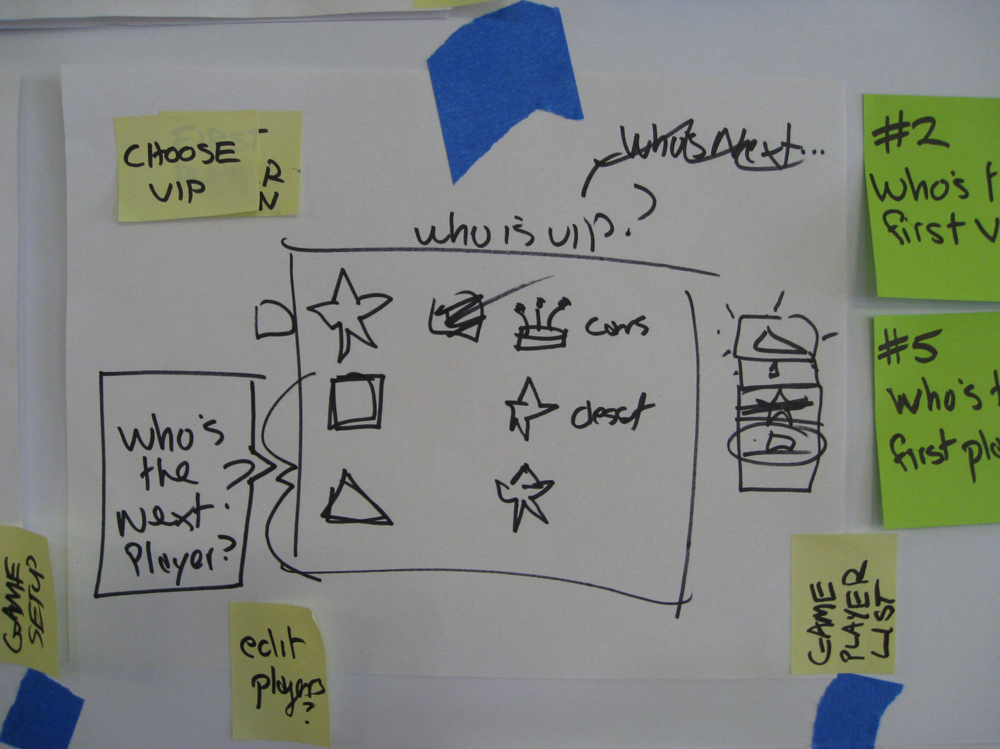
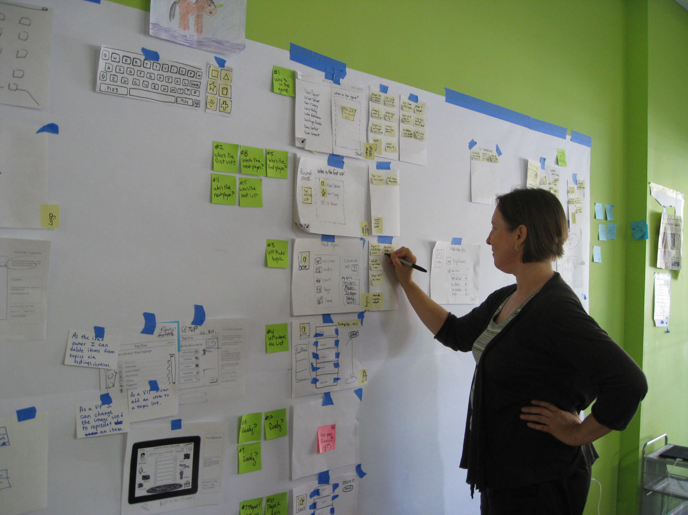

Agile methods are mainstream now. At the same time, thanks to the huge success of products like Amazon’s Kindle and Apple’s iPhone, so is User Experience (UX) design. But making Agile work with UX continues to be a challenge for many companies. In this chapter, we review how Lean UX methods can fit within the most popular flavor of Agile—Scrum—and discuss how blending Lean UX and Agile can create a more productive team and a more collaborative process. Here’s what this chapter covers:
Let’s get started.
Agile processes like Scrum use many proprietary terms. Over time, many of these terms have taken on a life of their own. To ensure that the way we’re using them is clear, we’ve taken the time to define a few of them here. (If you’re familiar with Agile, you can skip this section.)
As a [user type]
I want to [accomplish something]
So that [some benefit happens]
In May 2007, Desiree Sy and Lynn Miller published “Adapting Usability Investigations for Agile User-centered Design” in the Journal of Usability Studies.1 Sy and Miller were some of the first people to try to combine Agile and UX, and many of us were excited by the solutions they were proposing. In the 2007 article, Sy and Miller describe in detail their idea of a productive integration of Agile and User-Centered Design. They called it cycle 0 (though it has come to be referred to popularly as either “sprint zero” or sometimes “staggered sprints”).
In short, Sy and Miller described a process in which design activity takes place one sprint ahead of development. Work is designed and validated during the “design sprint” and then passed off into the development stream to be implemented during the development sprint, as is illustrated in Figure 7-1.

Many teams have misinterpreted this model, though. Sy and Miller always advocated strong collaboration between designers and developers during both the design and development sprints. Many teams have missed this critical point and instead have created workflows in which designers and developers communicate by handoff—creating a kind of mini-waterfall process.
Staggered sprints can work well for some teams. If your development environment does not allow for frequent releases (for example, you work on embedded software, or deliver software to an environment in which continuous deployment is difficult or impossible),2 the premium on getting the design right is higher. (In these cases, Lean UX might not be a great fit for your team because you’ll need to work hard to get the market feedback you need to make many of these techniques work.) For these teams, staggered sprints can allow for more validation of design work—provided you are still working in a very collaborative manner. And teams transitioning from waterfall to Agile can benefit from working this way, as well, because it teaches you to work in shorter cycles, and to divide your work into sequential pieces. However, this model works best as a transition. It is not where you want your team to end up.
Here’s why: it becomes very easy to create a situation in which the entire team is never working on the same thing at the same time. You never realize the benefits of cross-functional collaboration because the different disciplines are focused on different things. Without that collaboration, you don’t build shared understanding, so you end up relying heavily on documentation and handoffs for communication.
There’s another reason this process is less than ideal: it can create unnecessary waste. You waste time creating documentation to describe what happened during the design sprints. And, if developers haven’t participated in the design sprint, they haven’t had a chance to assess the work for feasibility or scope. That conversation doesn’t happen until handoff. Can they actually build the specified designs in the next two weeks? If not, the work that went into designing those elements is wasted.
These days, the term “design sprint” has taken on a new meaning. The term is now associated with the ideas in the book Sprint by Jake Knapp, John Zeratsky, and Braden Kowitz (Simon & Schuster). They describe a design sprint as a way to bring together all the key stakeholders on a new project or initiative. Working closely together over the course of five days, this cross-functional team brainstorms, iterates, and works their way through a series of ideas. The week culminates with a prototype. In most cases, the resulting prototype has even had a round or two of customer research applied to it.
This is a technique that we’ve used many times in our own practice (based on the time-honored Design Studio method, described in Chapter 4). It is highly effective at bringing together a diverse set of colleagues, exposing their assumptions and biases about the business problem at hand and injecting these opinions with a dose of market reality. In our experience, the ideal result of a design sprint is a backlog of hypotheses. This prioritized list of risks defines the work that the team must continue to validate throughout the project lifecycle. Design sprints also help us to better define the scope of our work—at least for the foreseeable future—allowing teams, both in-house and consulting, to provide their stakeholders with a more accurate timeline for product launch.
There are a few pitfalls to watch out for when running a full five-day design sprint:
In many ways, dual-track Agile is what Sy and Miller were trying to convey with their staggered-sprint model. Marty Cagan, Jeff Patton, and others advocate for a process in which a single team manages two backlogs: a discovery backlog and a delivery backlog. The team splits into two units to do the work: a discovery unit and a delivery unit. The discovery unit works through the discovery items, running experiments and speaking to customers in an effort to discover which ideas merit further exploration and which don’t. Ideas that graduate from discovery to delivery are built by the delivery unit of the team. This reduces the amount of documentation necessary to drive the delivery process because the people who validated the feature are in close contact with, or in some cases are, the same people who design and implement it. Figure 7-2 offers an overview of the process.

Theoretically, dual-track Agile promises to manage learning and delivery in a transparent way. It allows the team to prioritize their work based on evidence while using that same evidence to provide their stakeholders with regular updates, directional shifts, and data. In practice though, we’ve seen teams hit the following speed bumps:
Over the years, we’ve found some useful ways to integrate Lean UX approaches with the rhythms of Scrum. Let’s take a look at how you can use Scrum’s meeting cadence and Lean UX to build an efficient process.
Scrum has a lot of meetings. Many people frown on meetings, but if you use them as mileposts during your sprint you can create an integrated Lean UX and Agile process in which the entire team is working on the same thing at the same time.
Let’s assume that you’ve chosen a risky hypothesis as the early focus of your project. You can use that hypothesis to create a theme that guides the work you’ll do over the next set of sprints, as demonstrated in Figure 7-3.

Start work on each theme with some version of a Design Studio or design sprint. (See Figure 7-4.) Depending on the scope of the hypothesis, the design sprint can be as short as an afternoon or as long as a week. You can do them with your immediate team but should include a broader group if it’s a larger-scale effort. (See Chapter 4 for details on how to run a Design Studio.) The point of this kickoff is to get the entire team sketching, ideating, and speaking to customers together, creating a backlog of ideas from which to test and learn. In addition, this activity will help define the scope of your theme a bit better—assuming that you’ve built in some customer feedback loops.
After you’ve started your regular sprints, your ideas will be tested, validated, and developed: new insights will come in, and you’ll need to decide what to do with them. You make these decisions by running subsequent shorter brainstorming sessions and collaborative discovery activities before each new sprint begins. This allows the team to use the latest insight to create the backlog for the next sprint.

Bring the output of your design sprint to the iteration planning meeting (IPM). Your mess of sticky notes, sketches, wireframes, paper prototypes, and any other artifacts might seem useless to outside observers but will be meaningful to your team. You made these artifacts together and because of that you have the shared understanding necessary to extract stories from them. Use them in your IPM to write user stories together, and then estimate and prioritize the stories. (See Figure 7-5.)

As you plan your iteration, there might be additional discovery work that needs to be done during the iteration that wasn’t covered in the design sprint or collaborative discovery activities. Or, there might be work in your discovery backlog that you know is coming up that needs to happen by a certain time frame. To accommodate this in your sprint cadence use experiment stories. Captured by using the same method as your user stories, experiment stories have two distinct benefits:
Experiment stories look just like user stories, as illustrated in Figure 7-6.

Experiment stories contain the following elements:
The hypothesis you’re testing or the thing you’re trying to learn
Tactic(s) for learning (e.g., customer interviews, A/B tests, and prototypes)
Who will do the work
A level of effort estimate (if you do estimations) for how much work you expect this to be
After they are written, experiment stories go into your backlog. When their time comes up in the sprint, that’s the assigned person’s main focus. When the experiment is over, bring the findings to the team immediately and discuss them to determine the impact of these findings. Your team should be ready to change course, even within the current sprint, if the outcome of the experiment stories reveals insights that invalidate your current prioritization.
Finally, to ensure that you have a constant stream of customer feedback to use for your experiments, plan user research sessions every single week. (See Figure 7-7.) This way your team is never more than five business days away from customer feedback and has ample time to react prior to the end of the sprint. This weekly research cadence provides a good rhythm for your experiment stories as well as a natural learning point in the sprint.
Use the artifacts you created in the ideation sessions as the base material for your user tests. Remember that when the ideas are raw, you are testing for value (that is, do people want to use my product?). After you have established that there is a desire for your product, subsequent tests with higher-fidelity artifacts will reveal whether your solution is usable.

Agile methods can create a lot of time pressure on designers. Some work fits easily into the context of a user story. Other work needs more time to get right. Two-week cycles of concurrent development and design offer few opportunities for designers to ruminate on big problems. And although some Agile methods take a more flexible approach to time than Scrum does (for example, Kanban does away with the notion of a two-week batch of work, and places the emphasis on continuous flow), most designers feel pressure to fit their work into the time-box of the sprint. For this reason, designers need to participate in the sprint-planning process.
The major reason designers feel pressure in Agile processes is that they don’t (for whatever reason) fully participate in the process. This is typically not their fault: when Agile is understood as simply a way to build software, there doesn’t appear to be any reason to include nontechnologists in the process. However, without designer participation, their concerns and needs are not taken into account in project plans. As a result, many Agile teams don’t make plans that allow designers to do their best work.
For Lean UX to work in Agile, the entire team must participate in all activities—stand-ups, retrospectives, IPMs, brainstorming sessions—they all require everyone’s attendance to be successful. Besides negotiating the complexity of certain features, cross-functional participation allows designers and developers to create effective backlog prioritization.
For example, imagine at the beginning of a sprint that the first story a team prioritizes has a heavy design component to it. Imagine that the designer was not there to voice her concern. That team will fail as soon as they meet for their stand-up the next day. The designer will cry out that the story has not been designed. She will say that it will take at least two to three days to complete the design before the story is ready for development. Imagine instead that the designer had participated in the prioritization of the backlog. Her concern would have been raised at planning time. The team could have selected a story card that needed less design preparation to work on first—which would have bought the designer the time she needed to complete the work.
The other casualty of sparse participation is shared understanding. Teams make decisions in meetings. Those decisions are based on discussions. Even if 90 percent of a meeting is not relevant to your immediate need, the 10 percent that is relevant will save hours of time downstream explaining what happened at the meeting and why certain decisions were made.
Participation gives you the ability to negotiate for the time you need to do your work. This is true for UX designers as much as it is for everyone else on the team.
In my work as a product designer, I use Lean UX practices on a variety of projects. Recently I’ve worked on entertainment, ecommerce, and social-media products for different platforms, including iPad, iPhone, and the Web. The teams have been small, ranging from three to seven people. Most of my projects also share the following characteristics:
The project is run within an Agile framework (focus on the customer, continuous delivery, team sits together, lightweight documentation, team ownership of decisions, shared rituals like stand-ups, retrospectives, and so on).
The team contains people with a mix of skills (frontend and backend development, user experience and information architecture, product management and marketing, graphic design, and copywriting).
The people on the team generally performed in their area of expertise/strength, but were supportive of other specialties and interested in learning new skills.
Most of the teams I work with create entirely new products or services. They are not working within an existing product framework or structure. In “green fields” projects like these, we are simultaneously trying to discover how this new product or service will be used, how it will behave, and how we are going to build it. It’s an environment of continual change, and there isn’t a lot of time or patience for planning or up-front design.
The Innovation Games Company (TIGC) produces serious games—online and in-person—for market research. TIGC helps organizations get actionable insights into customer needs and preferences to improve performance through collaborative play. In 2010, I was invited to help TIGC create a new game for the consumer market.
I was part of the team that created Knowsy for iPad (Figure 7-8), a pass-‘n’-play game that’s all about learning what you know about your friends, family, and coworkers—while simultaneously testing how well they know you. The person who knows the other players best wins the game. It is fast, fun, and a truly “social” game for up to six players.
It was our first iPad application, and we had an ambitious deadline: one month to create the game and have it accepted to the Apple Store. Our small team had a combination of subject-matter expertise and skills in frontend and backend development as well as visual and interaction design. We also drew on the help of other people to help us play-test the game at various stages of development.

Early in the project, I sat with the frontend developer to talk about the game design. We created a high-level game flow together on paper (Figure 7-9), passing the marker back and forth as we talked. This was my opportunity to listen and learn what he was thinking. As we sketched, I was able to point out inconsistencies by asking questions like, “What do we do when this happens?” This approach had the benefit of changing the dialog from, “I’m right-you’re wrong,” to “How do we solve this problem?”
After we had this basic agreement, I was able to create a paper prototype of the game based on the flow and we play tested it with the team. The effect on the team was immediate. Suddenly, everyone “got it” and was excited about what we were doing. People began to contribute ideas that fit well together, and we were able to identify what parts we could each work on that supported the whole.
When we were all on the same page, it was easier for me to take some time away from the team and document what we’d agreed in a clickable prototype.

Knowsy’s foray into Lean UX proved a success. We got the app to the Apple Store in time for the deadline. I was called back later to help the team do another variant of the product. For that go-around, I used a similar process. Because I was working remotely and the development team was not as available to collaborate, I had to make heavier deliverables. Nevertheless, the basic principle of iterating our way to higher fidelity continued.

Management check-ins are one of the biggest obstacles to maintaining team momentum. Designers are used to doing design reviews, but unfortunately, check-ins don’t end there. Product owners, stakeholders, CEOs, and clients all want to know how things are going. They all want to bless the project plan going forward. The challenge for outcome-focused teams is that their project plans are dependent on what they are learning. They are responsive, so their typical plan lays out only small batches of work at a time. At most, these teams plan an iteration or two ahead. This perceived “short-sightedness” tends not to satisfy most high-level managers. How then do you keep the check-ins at bay while maintaining the pace of your Lean UX and Scrum processes?
Two words: proactive communication.
Jeff once managed a team that radically altered the workflow for an existing product that had thousands of paying customers. The team was so excited by the changes they’d made that they went ahead with the launch without alerting anyone else in the organization. Within an hour of the new product going live the vice president of customer service was at Jeff’s desk, fuming and demanding to know why she wasn’t told of this change. The issue was this: when customers have problems with the product, they call in for help. Call center representatives use scripts to troubleshoot customer problems and to offer solutions—except they didn’t have a script for this new product. Because they didn’t know it was going to change.
This healthy slice of humble pie served as a valuable lesson. If you want your stakeholders—both those managing you and those dependent on you—to stay out of your way, make sure that they are aware of your plans. Here are a few tips:
Maintain a “Problem Roadmap.” Instead of using a feature roadmap to communicate with stakeholders, transform the roadmap to communicate the problems you’ll be working on. Use this Problem Roadmap to drive planning and check-in meetings with stakeholders.
Proactively reach out to your product owners and executives to keep them updated on your plans.
Let them know:
how the project is going;
what you tried so far and learned;
what you’ll be trying next;
what risks you see in the product and how you plan to address them.
Keep the conversations focused on outcomes (how you’re trending toward your goal) not feature sets.
Ensure dependent departments (customer service, marketing, operations, etc.) are aware of upcoming changes that can affect their world.
Provide them with plenty of time to update their workflows if necessary.
Many of the tactics covered in this book are focused on one team. But in the real world, enterprise organizations have multiple product development teams working in parallel. How does Lean UX scale when the number of teams grows to tens or even hundreds of concurrent workstreams? This is the question of the moment in the Agile community. As Lean and Agile methods have become more mainstream, and as they have become the default working style for technology teams across industries, many people have become focused on this question. Large organizations have a legitimate need to coordinate the activity of multiple teams—processes based on learning your way forward present a challenge to most traditional project management methods.
A full discussion of how to create a truly Agile and Lean organization is beyond the scope of this book. It requires leadership to radically rethink the way it sets strategy, assembles teams, and plans and assigns work. That said, there are a few techniques that can help Lean UX scale in enterprise Agile environments and even take advantage of that scale. Here are just a few issues that typically arise and ways to manage for them:
This chapter took a closer look at how Lean UX fits into an Agile process. In addition, we looked at how cross-functional collaboration allows a team to move forward at a brisk pace, and how to handle stakeholders and managers who always want to know what’s going on. We discussed why having everyone participate in all activities is critical and how the staggered-sprint model, once considered the path to true agility, has evolved into design sprints and dual-track product discovery and delivery.
In the next chapter, we take a look at the organizational shifts that need to be made to support Lean UX. This chapter can serve as a primer for managers on what they’ll need to do to set teams up for success.
1 Desirée Sy, “Adapting Usability Investigations for Agile User-centered Design”, Journal of Usability Studies, May 2007.
2 Teams that work on mobile apps fall into a gray zone here. You can update frequently, but not continuously, so you’ll need to become crafty with your techniques. Using feature flags to turn some features on and off can help. You can also deliver experimental features inside apps by using a browser container within the app itself. Finally, it’s possible to test really early versions of features on the mobile web.